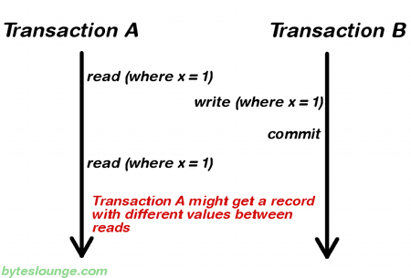

Atomicity(원자성)
==============
모든 작업이 완료되거나 모든 작업이 완료되지 않아야 한다.
즉, 트랜잭션내의 작업 중 하나라도 에러가 발생하면 트랜잭션내의 모든
작업이 롤백 되어야 한다.
자금 이체는 성공할 수도 실패할 수도 있지만 원자성은 중간 단계까지 실행되고 실패하는 일은 없도록 하는 것이다.
Consistency(일관성)
==============
트랜잭션이 실행을 성공적으로 완료하면 언제나 일관성 있는 데이터베이스 상태로 유지하는 것을 의미한다.
무결성 제약이 모든 계좌는 잔고가 있어야 한다면 이를 위반하는 트랜잭션은 중단된다.
Isolation(격리성)
==============
한 사용자가 어떠한 데이터를 수정하고 있는 경우 다른 사용자들이 그 데이터에
접근하는 것을 차단함으로써 완전한 데이터만을 사용자들에게 제공하게 됩니다.
트랜잭션을 수행 시 다른 트랜잭션의 연산 작업이 끼어들지 못하도록 보장하는 것을 의미한다.
이것은 트랜잭션 밖에 있는 어떤 연산도 중간 단계의 데이터를 볼 수 없음을 의미한다.
성능관련 이유로 인해 이 특성은 가장 유연성 있는 제약 조건이다.
은행 관리자는 이체 작업을 하는 도중에 쿼리를 실행하더라도 특정 계좌간 이체하는 양 쪽을 볼 수 없다.
ISOLATION_DEFAULT
isolation level, as the name states, uses the default isolation
level of the datastore we are actually connecting from our application.
ISOLATION_READ_UNCOMMITTED
어떤 사용자가 A라는 데이터를 B라는 데이터로 변경하는 동안 다른 사용자는 B라는
아직 완료되지 않은(Uncommitted 혹은 Dirty) 데이터 B를 읽을 수 있습니다.
dirty read: Transaction A writes a record. Meanwhile Transaction B reads
that same record before Transaction A commits.
Later Transaction A decides to rollback and now we have changes in
Transaction B that are inconsistent.
ISOLATION_READ_COMMITTED
대부분의 데이터베이스가 Default로 사용하는 Isolation Level입니다.
커밋된 데이터만 접근 가능합니다. 어떠한 사용자가 A라는 데이터를 B라는 데이터로
변경하는 동안 다른 사용자는 해당 데이터에 접근할 수 없습니다.

non_repeatable_read: In this example Transaction A reads some record.
Then Transaction B writes that same record and commits.
Later Transaction A reads that same record again and may get different
values because Transaction B made changes to that record and committed.
ISOLATION_REPEATABLE_READ
트랜잭션이 완료될 때까지 SELECT 문장이 사용하는 모든 데이터에 Lock이 걸리므로
다른 사용자는 그 영역에 해당되는 데이터에 대한 수정이 불가능합니다.
하지만, 조회하는 부분을 제외한 나머지 범위에 해당하는 Row를 INSERT하는 것이 가능합니다.
This eliminates both the dirty read and the non-repeatable read issues,
but even this way other issues may occur.
phantom_read: a transaction fetched a range of records multiple times
from the database and obtained different result sets.
In this example Transaction A reads a range of records.
Meanwhile Transaction B inserts a new record in the same range that
Transaction A initially fetched and commits. Later Transaction A reads
the same range again and will also get the record that Transaction B just inserted.
ISOLATION_SERIALIZABLE
트랜잭션이 완료될 때까지 SELECT 문장이 사용하는 모든 데이터에 Lock이 걸리므로
다른 사용자는 그 영역에 해당되는 데이터에 대한 수정 및 입력이 불가능합니다.
Transactions are executed with locking at all levels (read, range and write locking).
This leads to a scenario where none of the issues mentioned above may occur,
but in the other way we don't allow transaction concurrency and consequently
introduce a performance penalty.
|
dirty reads |
non-repeatable reads |
phantom reads |
| READ_UNCOMMITTED |
O |
O |
O |
| READ_COMMITTED |
X |
O |
O |
| REPEATABLE_READ |
X |
X |
O |
| SERIALIZABLE |
X |
X |
X |
Durability(내구성)
==============
시스템고장이나 네트워크 장애 등 으로 데이터가 유실되지 않고 정상적으로 기록되어야 한다.
성공적으로 수행된 트랜잭션은 영원히 반영되어야 함을 의미한다.
시스템 문제, DB 일관성 체크 등을 하더라도 유지되어야 함을 의미한다.
전형적으로 모든 트랜잭션은 로그로 남고 시스템 장애 발생 전 상태로 되돌릴 수 있다.
트랜잭션은 로그에 모든 것이 저장된 후에만 commit 상태로 간주될 수 있다.
보충
==============
ACID는 DB의 모든 연산이 한번에 실행되는 것을 권장한다.
널리 사용하는 두 가지 방법이 있는데 로깅방식과 새도우 패이징이다.
두경우 모두 업데이트 되는 데이터(구현방식에 따라 읽혀지는 데이터)에 락(lock)을 거는 것이 필요하다.
로깅방식에서 원자성은 DB에 데이터를 업데이트 하기 전에 로그에 모든 변경사항을 기록하는 것으로 보장된다.
이것은 크래쉬 현상이 발생하더라도 DB 무결성을 보장해준다.
새도 패이징 방식은 변경이 DB의 복사본에 저장된다.
그리고 새로운 복사본은 트랜잭션이 commit 되면 활성화 된다.
복사본은 변경 전 데이터 부분만을 의미한다.